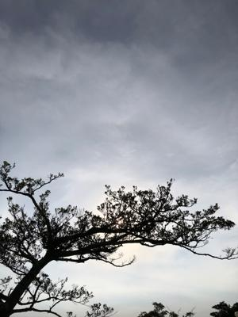
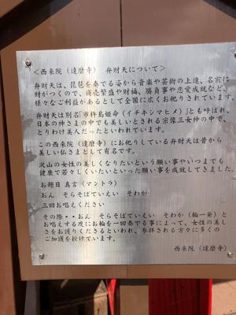

うるがいの話 ある日
最新: 弁財天【うるがいの話 ある日】とは 一日だけのプログです
『うるがいの話』の最新一日だけのプログで、通信料が少なく経済的だ。カニの画像をクリックすると全ての日付が載る『うるがいの話』サイトを表示します
|
|
【うるがいの話】 うるがい(ｳﾙｶﾞｲ urugai)とは、『もずくがに』の名前でとても大きくなります。 |
|---|---|
|
|
【カミマヤーの話】 猫のことを方言でマヤーといいます。カミマヤー（kamimayaa）とは、神の猫のことです。 |
|
【たながぁの音楽】 たながぁ（ﾀﾅｶﾞｰ tanagaa）とは手長えびのことで、何種類かあり大きいのは車 エビぐらいになります。 |

|
【ぶながぁの話】 ぶながぁ(ﾌﾞﾅｶﾞｰ bunagaa)とは、赤い髪の毛、赤い身体、そして身長は１ｍ２０ｃｍ ぐらい、川の蟹を食べているの目撃された。場所は沖縄県国頭郡大宜味村のと ある村僕の隣近所に住んでいる爺さんから、聞いた話です。 |
|
|
【ギーマの話】 ギーマ(giima)とは、山原の里山に咲くスズランに似た、 花を付けます。実は食べられます、 気が付くと口の周りが紫になっています。 |
2022年07月17日 (日）弁財天
16:14
 
<西来院(達磨寺) 弁財天について>
弁財天は、琵琶を奏でる姿から音楽や芸術の上達、名前に
財がつくので、商売繁盛や財福、勝負事や恋愛成就など、
様々なご利益があるとして全国に広くお祀りされています。
弁財天は別名市杵島姫命(イチキシマヒメ)」とも呼ばれ、
日本の神さまの中でも美しいとされる宗像三女神の中で、
とりわけ美人だったといわれています。
この西来院(達磨寺)にお祀りしている弁財天は昔から
美しい仏さまとして有名です。
沢山の女性の美しくなりたいという願い事やいつまでも
健康で若々しくいたいといった願い事を成就してきました。
お題目 真言(マントラ)
おん そらそばていえい そわか
三回お唱えください
その際..おん そらそばていえい そわか(輪一発)と
お唱えする度にお輪を一回奏でる事によって、女性の美し
さをお護りくださるといわれ、参拝される方々に多くの
ご加護を授けています。
西来院(達磨寺)
ネットより
弁才天のマントラはコミュニケーションを
司る第五チャクラを開くともいわれています。
オン サラスバティエイ ソワカ
オン・ソラソバテイエイ・ソワカ
アマゾンプライムで購入したレコーダーが家に届くテレビがまだなので放置す
る。諦めた筈のＰＣスピーカーの値段が１６，０００円から元の１２，１３８
円に戻っていたので購入する。なぜ１６，０００円に上がったのか、外国製な
ので円安の影響が出ているのかと悶々としていたが。
１６時０９分 ビットコインの総資産 ￥８、６４５↑